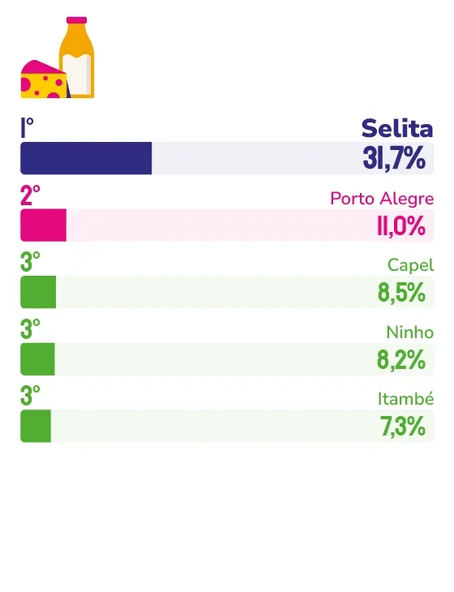

LEITE E DERIVADOS
SELITA
Cooperativa de famílias rurais do Espírito Santos, a marca chega a 2026 com um complexo industrial novo, portfólio em expansão e a mesma essência que a tornou inesquecível para os capixabas.
Existe uma diferença entre ser uma marca conhecida e ser uma marca lembrada. A Selita, mais uma vez eleita marca ícone na categoria Leite e Derivados pela população da Grande Vitória, conquistou o segundo posto, aquele que se constrói no tempo, na qualidade e na relação genuína com quem consome.
Para o presidente da Selita, Leonardo Monteiro, esse reconhecimento vai além de um troféu. “Estamos presentes não apenas nas mesas das famílias, mas também na memória afetiva dos capixabas”, diz. E há uma razão estrutural para isso: como cooperativa, cada produto que chega à mesa do consumidor carrega o trabalho de milhares de famílias produtoras rurais do Espírito Santo. Não é slogan, é origem; e é essa cadeia humana que transforma uma compra rotineira em algo que se repete por gerações.
Leonardo acredita que a lembrança espontânea – aquela que a pesquisa Marcas Ícones mede, sem estímulo e sem lista – é construída no dia a dia. “Quando o consumidor pensa na Selita, ele associa nossos produtos à confiança, sabor, procedência e à certeza de estar levando para casa um alimento de qualidade”, explica. Para sustentar essa percepção, a empresa investe em escuta ativa: pesquisas, presença nos pontos de venda, participação em eventos e atenção constante às mudanças de comportamento do mercado.
Nos últimos anos, um movimento concreto marcou essa trajetória: a inauguração do novo complexo industrial em Cachoeiro de Itapemirim. Com tecnologia de ponta e capacidade de produção ampliada, o investimento abriu caminho para novos produtos e processos mais eficientes. “Esse investimento reforça nosso compromisso em atender cada vez melhor os consumidores, mantendo a qualidade que sempre caracterizou a marca”, reforça Leonardo.
O mercado exige mais, e a Selita sabe disso. Para o presidente da cooperativa, o consumidor capixaba está cada vez mais informado e exigente, buscando não só qualidade, mas praticidade, transparência e produtos alinhados ao seu estilo de vida. A resposta da empresa vem em forma de portfólio em expansão e inovação contínua, sem abrir mão do que a fez chegar até aqui.
Leonardo adianta que os próximos anos serão de consolidação e novidades. “O consumidor capixaba pode esperar novidades que reforcem nosso compromisso com qualidade, praticidade e sabor”, antecipa.
E quando o assunto é o futuro de longo prazo, ele é categórico. “Existe algo que não pode mudar sob hipótese alguma: o compromisso com a qualidade, a confiança dos consumidores e os valores cooperativistas que fazem parte da essência da Selita há mais de oito décadas.”

Leonardo Monteiro
Presidente da Selita
“Como cooperativa, temos uma característica muito especial: cada produto carrega o trabalho de milhares de famílias produtoras rurais do Espírito Santo. Mantemos um diálogo constante com nossos consumidores, investimos em pesquisas, participamos de eventos, estamos presentes nos pontos de venda e buscamos compreender as mudanças de comportamento do mercado. Mais do que vender produtos, procuramos construir uma relação de confiança que se fortalece a cada geração.”
49
